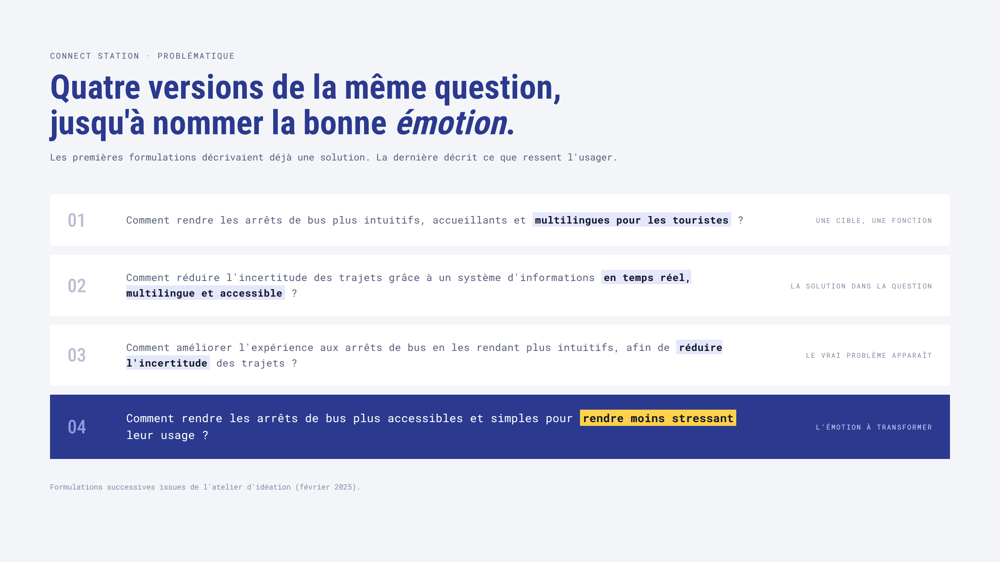
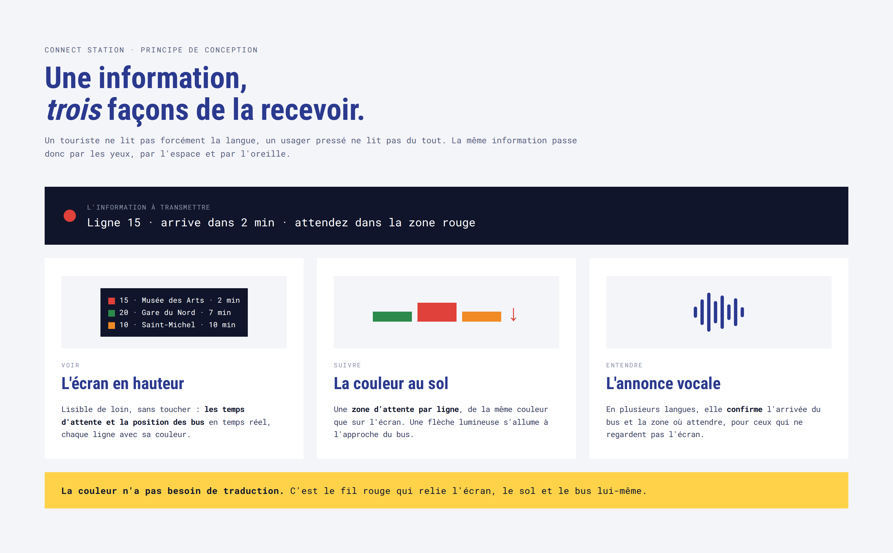
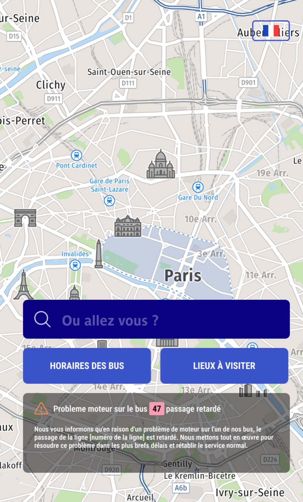
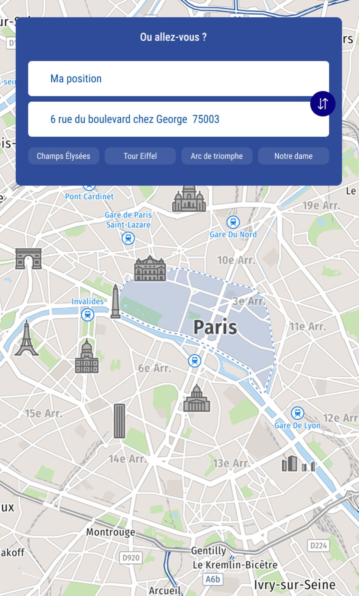
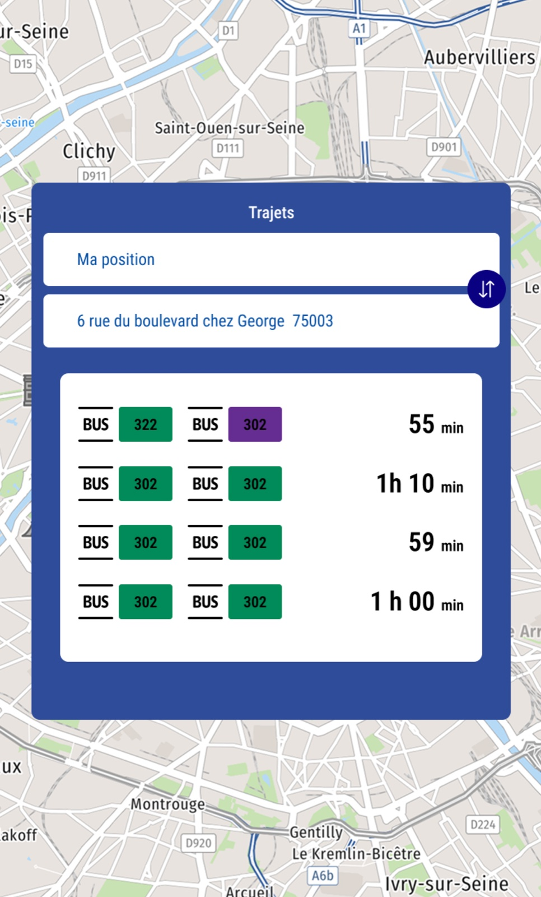
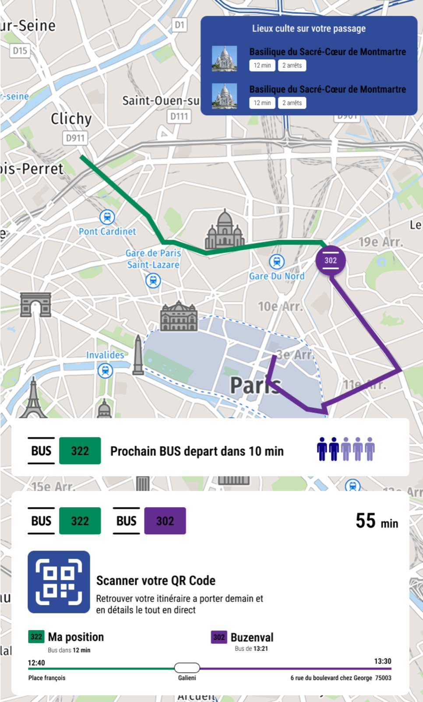
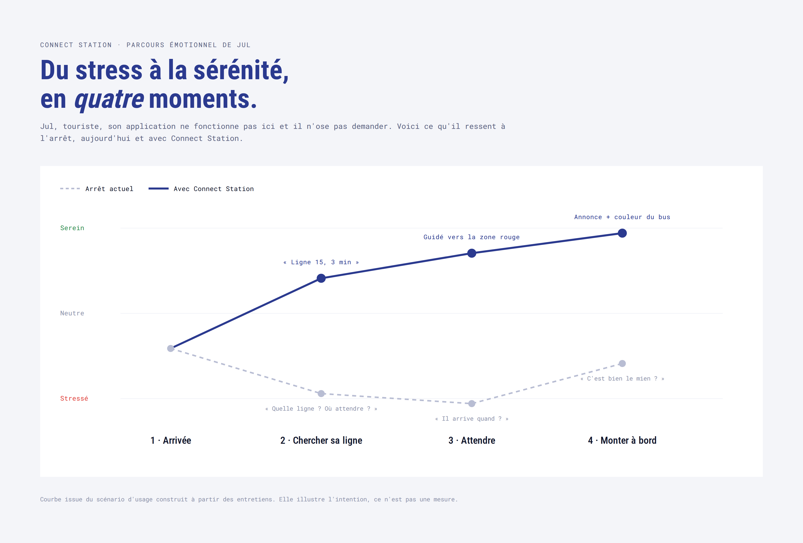
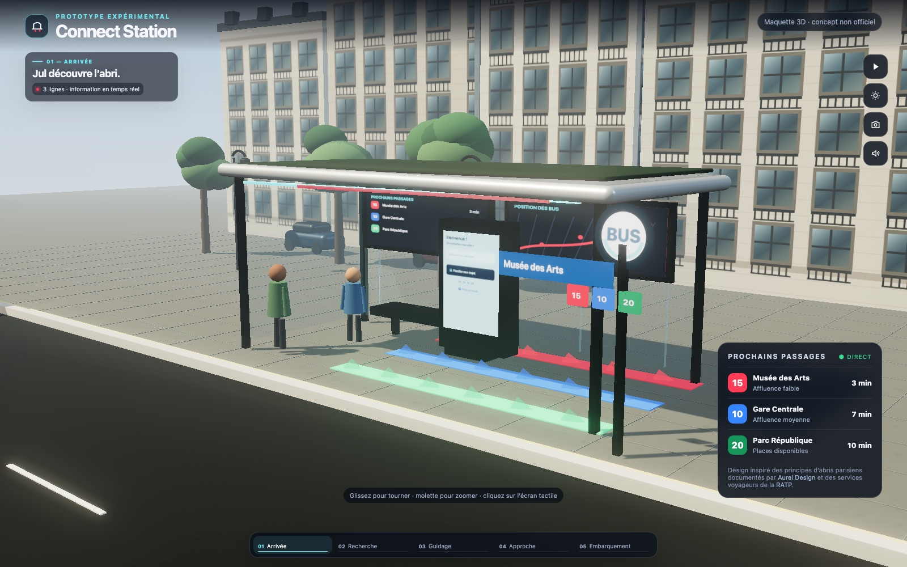
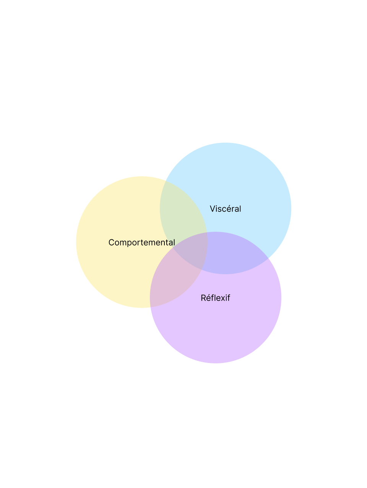

Problèmes
Des arrêts mal signalés, des informations statiques et monolingues, et une question qui revient sans cesse : « est-ce que je suis au bon endroit ? »
Intro
Le brief tenait en une phrase : repenser un lieu de passage pour en faire un espace qui suscite une émotion. J'avais cinq jours, seul.
J'ai choisi l'arrêt de bus. On le retrouve dans toutes les villes et tout le monde l'utilise, pourtant quiconque a déjà attendu un bus dans une ville inconnue connaît ce moment de doute : est-ce la bonne ligne ? Le bon côté de la rue ? Il arrive quand ?
Ma réponse, Connect Station : un abri qui guide par l'écran, par la couleur et par la voix, pour que l'attente cesse d'être une source de stress.
Projet d'école réalisé en solo, en une semaine, dans le cadre d'un atelier de design émotionnel (IIM, Master UX Design).
Des arrêts mal signalés, des informations statiques et monolingues, et une question qui revient sans cesse : « est-ce que je suis au bon endroit ? »
Une même information sur trois canaux : un écran en temps réel, des zones de couleur au sol par ligne et des annonces vocales multilingues, complétés par un écran tactile pour chercher son trajet.
Un concept présenté avec une maquette physique à l'échelle et un prototype tactile cliquable, ainsi qu'un plan de tests pour mesurer la baisse du stress.
Le terrain
J'ai interrogé une dizaine de personnes ayant pris le bus en voyage. Les mêmes frustrations revenaient :
Plusieurs personnes m'ont dit la même chose : plutôt que de demander, elles préfèrent se débrouiller, quitte à se tromper.
Problématique
Mes premières formulations décrivaient déjà une solution : « multilingue », « temps réel ». Je répondais avant d'avoir posé la question.
À force de la reformuler, le vrai sujet est apparu. Ce n'est pas un manque de fonctionnalités, c'est un état émotionnel :
Comment rendre les arrêts de bus plus simples et plus accessibles pour rendre leur usage moins stressant ?

Idéation
Mes idées se sont réparties en trois familles : les écrans (temps réel, recherche tactile, voix, QR code), la signalétique (couleurs, marquage au sol, flèches lumineuses) et le confort (éclairage, recharge USB, capteurs d'affluence).
Je me suis fixé deux contraintes : ne pas disperser l'information à plusieurs endroits et ne pas la compliquer. Un touriste perdu n'a pas besoin de plus d'informations, il a besoin des bonnes, au bon endroit.
Je n'ai gardé que quatre fonctions, toutes liées à la même question : où et quand prendre mon bus ? Le confort, utile, a été mis de côté.
17 idées•3 familles•4 fonctions retenues
Principe de conception
Un touriste ne lit pas forcément la langue locale. Un habitant pressé ne lit pas du tout. J'ai donc fait passer la même information par trois canaux :
La couleur n'a pas besoin de traduction. C'est le fil rouge qui relie l'écran, le sol et le bus.

Écran tactile
J'ai séparé deux usages : regarder et chercher. L'écran en hauteur sert à ceux qui veulent juste savoir quand arrive leur bus. L'écran tactile, à hauteur d'homme, sert à ceux qui ne savent pas encore quel bus prendre.
Son parcours tient en quatre écrans :




Scénario
Pour tester ma logique, j'ai suivi Jul : un touriste dont l'application ne marche pas ici et qui n'ose pas demander. À chaque moment où il décrochait, un canal de Connect Station le raccroche.


Cadre théorique
Je me suis appuyé sur les trois niveaux du design émotionnel de Don Norman :

Si c'était déployé
C'est un concept : je n'ai pas de données d'usage. J'avais donc préparé un plan de test en situation réelle :
Sur l'écran tactile. Objectif : moins de 30 secondes.
Lumineux et sonores, par observation directe.
Avec un simple smiley à l'écran après usage.
De l'écran tactile et des QR codes.
La vraie question serait de savoir si les touristes finissent par prendre le bus plutôt qu'un taxi, parce qu'ils ne le redoutent plus.
Ce que j'en retiens
J'aurais pu ajouter des fonctionnalités à l'infini. Le projet a avancé quand j'ai accepté de répéter la même information plutôt que d'en ajouter une nouvelle, sous la forme la plus simple possible : une couleur, une voix, un chiffre.
Projet suivant
Bell & Ross